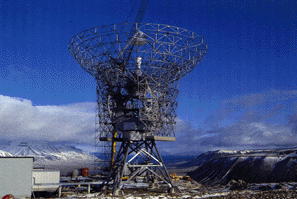

Den nære sammenhengen mellom telekommunikasjon og informasjonsteknologi fremstår som strategisk viktig for mange bedrifter. Data/telefon-integrasjonen kommer til å bli en del av hverdagen for oss alle, først og frems hos de som vet å bruke IT som konkurransefortrinn. I årene fremover vil det skje mye på dette markedet med bl.a. oppløsning av telemonopolet o.s.v. og på Kontor og Data'96 skal norsk næringsliv se med egne øyne hva dette kan føre til! På Kontor og Data'96 vil vi som følge av dette være med på å sette nettopp telekommunikasjon og fremtidens løsninger i fokus. Utstillingen vil i tillegg til tidligere nevnte grupper invitere utstillere med produkter innen telekommunikasjon som bl.a. leverandører av:
Tale, data, og bildekommunikasjon * Satelittkommunikasjon * ISDN * Fjerntrafikknett (WAN) * Kabelavhenting, overføringsteknikk og kabelsystemer * Telekommunikasjonstjenester for næringslivet * Mediaservice * Verdiøkende tjenester m.m.